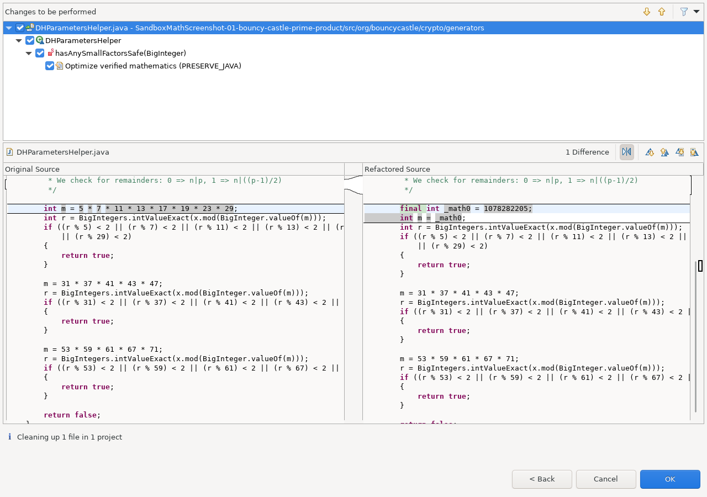
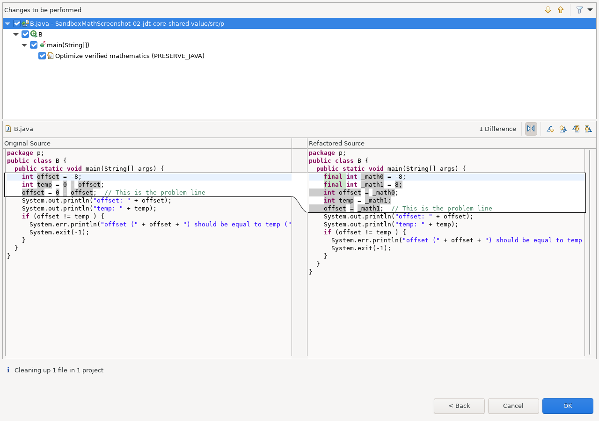
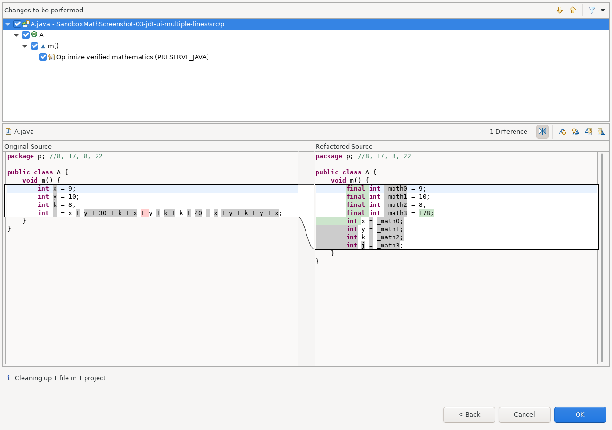
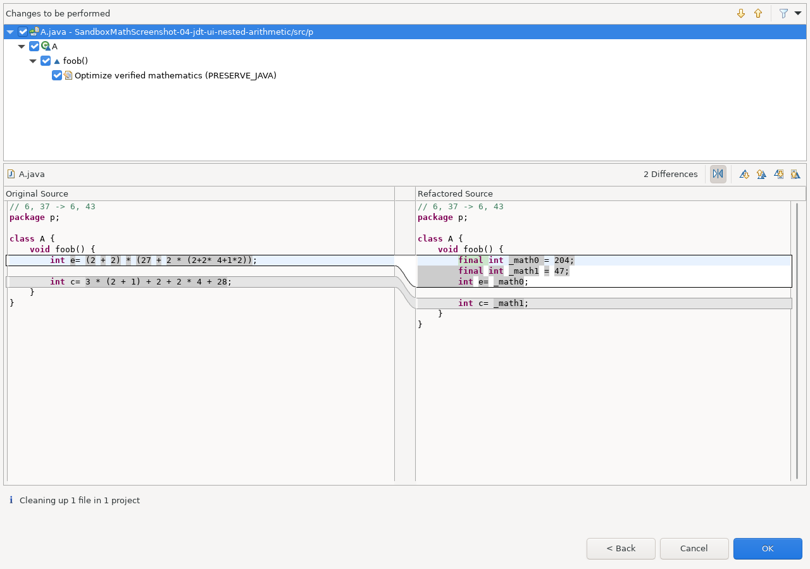

These are screenshots of the ordinary Eclipse Clean Up preview. The left and right panes contain the original and proposed Java source. The registered mathematics cleanup computes each change; the screenshot test checks the complete preview, applies it, parses the result with resolved bindings, and verifies byte-for-byte Undo before accepting the image.
The examples increase the complexity of the source calculation. One comes from Bouncy Castle production code; three are existing Eclipse JDT regression inputs. The JDT fixtures are not claims that the JDT implementation contains those calculations. Original repository revisions and source locations are linked beside every example.
final _math... temporaries and preserves the original
variable declarations, so fewer arithmetic operations can mean more source
lines. The screenshots show that output without hand editing it.The example projects target Java 17; the Eclipse host runs on Java 25. Click an image to inspect the full-size 1280 × 900 capture.
| Level | Source | Visible transformation |
|---|---|---|
| 1 | Bouncy Castle production method | A product of eight small primes becomes one integer constant. |
| 2 | JDT Core compiler regression input | Two negations reuse the same known value while assignments and a comment remain. |
| 3 | JDT UI Extract Temp regression input | Values propagate through three local declarations into a longer sum. |
| 4 | JDT UI Extract Temp regression input | Two nested arithmetic expressions produce two independent results. |
DHParametersHelper.hasAnySmallFactorsSafe
combines small prime divisors into a modulus for trial division. The screenshot
uses that complete, unchanged method in its original package and class; only
unrelated members are omitted. The real Bouncy Castle BigIntegers
class supplies bindings, rather than a source stub.
Before: int m = 5 * 7 * 11 * 13 * 17 * 19 * 23 * 29;
After: final int _math0 = 1078282205;
int m = _math0;

Source: bcgit/bc-java, commit c314b9cdffa3958a0eff5344f8fdcdb0181ed830.
Bouncy Castle copyright and MIT license.
NumericTest.test001
contains a small compiler regression program. Starting with offset = -8,
it calculates 0 - offset twice. The cleanup produces one constant
8 and uses it for both temp and the new offset.

Source: JDT Core R4_40, commit ef3d6f2115df89d7964bc13aa363ab8d6bd21256, EPL-2.0.
ExtractTemp A_test114_in.java
initializes x = 9, y = 10 and k = 8 before
a longer sum. The cleanup follows those local values and derives
j = 178. The screenshot uses the complete upstream fixture.

ExtractTemp A_test54_in.java
contains nested additions and multiplications in two initializers. The actual
cleanup computes e = 204 and c = 47, retaining both
outputs and the original surrounding source.

Both JDT UI examples: R4_40, commit
c922f757b27b7e2b6215db383cec5f8aafd13227, EPL-2.0.
The inspected Bouncy Castle GF256AES.mul calculation exceeded
the current plan-preparation bound. A JDT test with nested shifts of a variable
returned an inconclusive search relation. Neither is presented as a successful
transformation. Likewise, the BigInteger/modular reference described in the
qualification documentation is not evidence that arbitrary cryptographic
methods are optimized. Review each actual preview and its diagnostics.